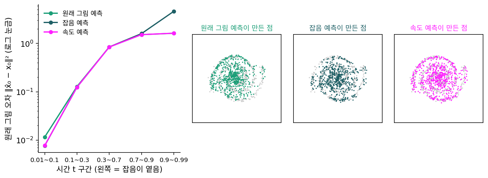

예측의 대상: 잡음·속도장·이미지
이 장의 물음
그림 생성 도구 ComfyUI 에 Stable Diffusion 2.x 모델 파일을 올리면, 프로그램은 먼저 이 신경망이 무엇을 내놓는지부터 짐작해야 한다. 파일 어디에도 적혀 있지 않기 때문이다. ComfyUI 코드는 신경망 뒤쪽 한 층의 치우침 값들을 꺼내, 그 표준편차가 0.09를 넘으면 잡음과 원래 그림을 섞은 양 v 를 내놓는 모델로, 아니면 잡음을 내놓는 모델로 정한다. 그 줄 옆의 주석은 「이게 얼마나 잘 될지 모르겠다. 두고 보자(not sure how well this will actually work. I guess we will find out.)」다(comfy/supported_models.py 의 SD20). 짐작이 틀릴 때를 위해 ModelSamplingDiscrete 마디가 있어, 사람이 eps(잡음), v_prediction(v), x0(원래 그림) 가운데 하나를 골라 준다. 잘못 고르면 같은 출력을 다른 양으로 읽으니 그림이 망가진다.
잡음, 속도, 원래 그림, 스코어는 지금 자리와 시간만 알면 식 한 줄로 서로 바뀌는 같은 정보였다. 그런데도 모델을 만든 사람들은 저마다 다른 것을 골랐다. 2020년의 DDPM 은 잡음을 맞혔고, 같은 Stable Diffusion 2.x 안에서도 잡음을 내놓는 모델과 v 를 내놓는 모델이 섞여 있으며, FLUX.1 은 직선 길의 속도를 맞힌다. 최근 픽셀에서 바로 그림을 만드는 몇몇 모델은 원래 그림을 맞힌다. 이 장은 다음 물음을 따라간다.
- 끝까지 배우면 같은 답에 닿는 출력 꼴들이, 학습하는 동안에는 무엇이 다를까?
- 그림이 넓은 공간의 좁은 곳에만 모여 있다면, 사방으로 퍼진 잡음보다 그림을 맞히는 쪽이 쉬워야 하지 않을까? 그 차이는 언제 드러날까?
- 그렇다면 처음 크게 성공한 모델은 왜 잡음을, 그것도 VAE 로 줄인 공간에서 맞혔을까?
원래 그림 예측: 같은 답, 다른 배점
신경망에게 맞히게 할 것은 지금까지 둘을 보았다. 섞은 잡음 ε 를 맞히는 잡음 예측과, 짝의 속도 ε − x₀ 를 맞히는 속도 예측이다. 하나를 맞히면 다른 것은 지금 자리 xₜ 와 시간 t 로 계산되고, 제곱 오차로 끝까지 배운 답은 어느 쪽이든 그 자리를 지나는 짝들의 평균이다. 다만 바꿔 읽는 식이 1 − t 나 t 로 나누는 끝에서는 작은 오차가 부푼다. 남은 후보가 하나 있다. 깨끗한 그림 x₀ 를 바로 내놓게 하면, 원래 그림을 얻으려고 나눌 일이 아예 없다. 그런데 2020년 DDPM 논문은 이 길을 시험해 보고 「그림이 더 나빴다」고만 적었다. 끝까지 배운 답이 같다면, 무엇이 달랐을까?
역사: 「초기 실험에서 그림이 더 나빴다」
호(Jonathan Ho)와 동료들의 DDPM 논문은 신경망이 무엇을 내놓을지를 CIFAR-10(가로세로 32픽셀 컬러 그림, 한 장에 수 3,072개)에서 견주었다. 잡음을 맞히되 모든 걸음에 같은 비중을 준 단순한 손실이 FID(진짜 그림들과 생성 그림들의 특징 분포가 얼마나 다른지, 낮을수록 좋다) 3.17로, ELBO 그대로 학습한 13.22~13.51보다 훨씬 좋았다(논문 표 2). 원래 그림을 맞히는 길은 괄호 속 한 문장, 「초기 실험에서 그림의 질이 더 나빴다」뿐이고 숫자도 까닭도 없다. 공개 코드에는 그 길이 남아 있다. 신경망이 원래 그림을 내놓게 하는 설정(xstart)을 고르면, 손실은 원래 그림과의 가중치 없는 제곱 오차다.
2022년 샐리먼스(Tim Salimans)와 호가 출력 꼴과 손실의 가중치를 따로 바꿔 가며 CIFAR-10 에서 다시 견주었을 때는, 원래 그림을 바로 맞히는 쪽이 잡음 예측만큼, 오히려 조금 더 잘 되었다. 같은 원래 그림 예측이 한 실험에서는 나빴고 다른 실험에서는 좋았다.
같은 신경망, 출력만 셋
무엇이 그 차이를 만드는지 보려면, 출력 꼴 말고는 모든 것이 같은 학습을 나란히 놓고 재 보면 된다. 데이터는 평면 위의 두 갈래 나선이다. 팔이 가늘어서 옅은 잡음에서 결을 다듬는 일과, 두 팔이 어떻게 감겼는지 짙은 잡음에서 큰 모양을 잡는 일이 모두 있고, 만든 점을 그대로 그려 볼 수 있는 가장 작은 데이터다. 신경망은 선형 층 넷, 폭 128(은닉 층 하나에 수 128개)인 작은 MLP 하나이고, 잡음 섞기는 이 책의 직선 길이다. 바꾼 것은 신경망이 내놓는 것과, 그것을 DDPM 의 공개 코드처럼 그 정답과의 가중치 없는 제곱 오차로 재는 손실뿐이다.
셋 다 10,000걸음 학습한 뒤, 시험 점 8,192개에서 출력을 모두 원래 그림의 어림 x̂₀ 로 바꿔 같은 잣대로 쟀다. 오일러 100걸음으로 점 4,096개도 만들어, 참 나선과 얼마나 다른지를 조각 바서슈타인 거리(여러 방향으로 비춘 그림자끼리의 어긋남을 평균 낸 거리, 같은 분포면 0)로 쟀다. 시드 셋의 평균이다. 마지막 칸은 잡음 섞인 점마다 짝들의 평균을 참 나선 표본 20만 개로 직접 계산해, 끝까지 배운 답이 남기는 오차를 잰 것이다.
| 시간 t 구간 | 원래 그림 오차 ‖x̂₀ − x₀‖²: 원래 그림 / 잡음 / 속도 예측 | 끝까지 배운 답 |
|---|---|---|
| 0.01~0.1 (가장 옅음) | 0.0116 / 0.0077 / 0.0077 | 0.0064 |
| 0.3~0.7 | 0.843 / 0.845 / 0.841 | 0.840 |
| 0.9~0.99 (가장 짙음) | 1.623 / 4.611 / 1.629 | 1.622 |
| 만든 점과 참 나선의 조각 바서슈타인 거리 | 0.157 / 0.132 / 0.042 |

가운데 구간에서 셋의 오차는 0.5% 안에서 같고, 끝까지 배운 답이 남기는 0.840에 붙어 있다. 그 잡음 수준에서는 누가 맞혀도 남는 흔들림이다. 차이는 양 끝에만 있다. 가장 짙은 구간에서 잡음 예측의 오차가 다른 둘의 2.8배인 것은 잡음 어림을 원래 그림으로 바꿀 때 1 − t 로 나누는 일 그대로다. 가장 옅은 구간에서는 원래 그림 예측의 오차가 1.5배다. 이쪽은 나눗셈이 없는데도 생겼다. 만든 점은 속도 예측이 참 나선에 가장 가까웠고, 원래 그림 예측과 잡음 예측은 시드마다 0.11~0.21 사이를 오가 둘의 순서는 가리기 어렵다.
이렇게 신경망이 섞은 잡음이나 속도가 아니라 깨끗한 그림 자체를 내놓게 하고, 샘플러가 쓸 속도나 잡음은 xt 와 식으로 바꿔 얻는 꼴을 원래 그림 예측 (깨끗한 그림을 바로 맞히도록 신경망의 출력을 정하기 / x-prediction)이라 한다. 출력 꼴과 손실을 재는 공간은 따로 고를 수 있다. 원래 그림을 내놓되 오차는 속도로 바꿔 잴 수도 있다. 끝까지 배운 답이 같은데 왜 하필 옅은 끝에서 원래 그림 예측이 뒤처졌는지는 아래 문제에서 따져 보자.
ML에서: 샘플러는 출력 꼴을 묻지 않는다
ComfyUI 는 모델이 무엇을 내놓든 샘플러에 넘기기 전에 원래 그림의 어림으로 바꾼다. 원래 그림을 내놓는 모델(코드의 X0)은 출력을 그대로 넘기고, 잡음을 내놓는 모델(EPS)과 직선 길의 속도를 내놓는 모델(CONST)은 「입력 − 출력 × 시그마」로 바꾼다(comfy/model_sampling.py 의 calculate_denoised. 시그마가 가리키는 값은 두 모델에서 다르다). 샘플러에게 세 모델은 같은 것을 내놓는 기계이고, 출력 꼴의 흔적은 신경망이 어느 잡음 수준을 얼마나 잘 배웠느냐로만 남는다.
문제 1. 연비를 km/L 로 잴까, 100 km당 리터로 잴까
운송 회사가 차 두 대의 연비를 잰다. 경차는 20 km/L, 화물차는 4 km/L 이고, 측정기는 어느 차든 ±0.5 km/L 쯤 틀린다. 회사가 내는 기름값은 100 km 를 달리는 데 드는 리터 수에 비례한다. (가) 같은 ±0.5 km/L 오차는 두 차에서 각각 100 km당 몇 리터의 오차가 되는가? (나) km/L 로 잰 오차를 두 차에서 똑같이 신경 써서 줄이면, 기름값으로 보았을 때 두 차는 각각 얼마만큼 신경 쓴 셈인가? (다) 측정기를 한 대만 고칠 수 있다면 어느 차의 것을 고쳐야 하는가?

(가)는 0.5 km/L 면 어느 차든 비슷하겠죠. 같은 측정기니까요.

100 km에 드는 리터로 바꿔서 계산해 봐요.

경차는 100/20 = 5 L 이고, 19.5~20.5 km/L 면 4.88~5.13 L 라 ±0.13 L 쯤이에요. 화물차는 100/4 = 25 L 인데 3.5~4.5 km/L 면 22.2~28.6 L… 3 L 안팎이 틀려요. 같은 0.5인데 25배쯤 차이가 나네요.

리터 수는 100을 연비로 나눈 거라 연비가 작을수록 기울기 100/m² 가 커져. 20에서 0.25, 4에서 6.25, 비가 (20/4)² = 25야. (나)는 오차를 제곱해서 견주면 그 비가 또 제곱이 돼서 625배. km/L 로 두 차를 똑같이 신경 썼다는 건, 기름값으로 보면 화물차에 마땅히 줄 무게의 625분의 1만 준 거야.

같은 숫자를 어느 변수로 적어 놓고 오차를 줄이느냐가 곧 배점표예요. (다)는요?

화물차요. 오차를 0.5에서 0.1 km/L 로 줄이면 기름값 오차가 3.1 L 에서 0.63 L 로 줄지만, 경차를 고치면 0.13 L 가 0.03 L 가 될 뿐이에요. 가계부를 「몇 % 아꼈나」로만 보면 커피값 10%와 월세 10%가 똑같아 보이는데, 실제로 줄어드는 돈은 전혀 다른 거랑 같네요.
문제 2. 짙은 잡음에서 원래 그림을 맞히면 흐릿하다?
직선 잡음 섞기 xt = (1 − t)x₀ + tε 에서 (가) 원래 그림 오차 ‖x̂₀ − x₀‖² 를 잡음 오차 ‖ε̂ − ε‖² 로 적으면 무엇이 곱해지는가? t = 0.1, 0.5, 0.9에서 구하라. (나) 데이터가 ±1 두 점(반반)이고 t = 0.9, xt = 0.5일 때, 원래 그림을 맞히는 신경망과 잡음을 맞히는 신경망을 각각 끝까지 학습하면 원래 그림의 어림은 얼마씩인가? (다) DDPM 의 공개 코드에서 원래 그림을 맞히는 길은 가중치 없는 제곱 오차 ‖x̂₀ − x₀‖² 로 학습한다. 이 손실을 잡음 오차로 보면 어느 잡음 수준에 힘을 몰아주는가?
답부터 짐작하면, 원래 그림을 맞히게 하면 잡음이 짙을 때 0 근처의 흐릿한 평균만 나오잖아요. DDPM 에서 원래 그림 예측이 나빴던 건 그래서죠.

(나)를 먼저 해 볼까요? 두 신경망이 끝까지 배우면 각각 무엇을 내놓아요?

원래 그림을 맞히는 쪽은 평균 x̂₀ = tanh(0.1 × 0.5/0.9²) = tanh(0.0617) = 0.0617이요. 정말 0 근처예요. 잡음을 맞히는 쪽은 ε̂ = (0.5 − 0.1 × 0.0617)/0.9 = 0.5487이고, 이걸 원래 그림으로 바꾸면 (0.5 − 0.9 × 0.5487)/0.1 = 0.0617… 똑같네요.

끝까지 배운 답은 출력 꼴과 상관없이 같은 조건부 평균이야. 흐릿한 건 그 자리의 답이 원래 흐릿한 거지, 원래 그림을 맞혀서 생긴 게 아니야. 그럼 다른 건 학습 도중에 오차를 어디에 얼마나 세게 매기느냐뿐이겠네.
(가)는 x̂₀ = (xt − tε̂)/(1 − t) 니까 x̂₀ − x₀ = −t(ε̂ − ε)/(1 − t), 곱해지는 수는 (t/(1 − t))². 0.1에서 0.0123, 0.5에서 1, 0.9에서 81이야.
그럼 (다)는요? 잡음 오차로 보면 어느 쪽이 무거워요?
짙은 잡음 쪽이 81배, 옅은 잡음 쪽은 0.0123배라 거의 0이요. 옅은 잡음에서 가는 결을 다듬는 걸음을 손실이 거의 안 보는 거네요. 잡음 예측의 단순한 손실은 모든 걸음에 같은 비중이었고요.

그래요. 논문은 까닭을 적지 않았으니 이것은 짐작이에요. 그 짐작을 받쳐 주는 것이 샐리먼스·호의 실험이에요. 가중치를 다르게 주자 원래 그림 예측도 잡음 예측만큼, 오히려 조금 더 잘 됐어요. 32 × 32 그림과 넉넉한 U-Net 에서는 남는 차이가 가중치뿐이었던 거죠.
과목마다 배점을 다르게 매기면 같은 실력이어도 등수가 바뀌는 거랑 같네요. 실력이 아니라 배점표 차이였어요.
문제 3. 손실 기록만 보고 고르기
동료가 위의 나선 실험을 다시 돌려, 학습이 끝난 뒤의 시험 손실을 보내왔다. 원래 그림 예측 0.826, 잡음 예측 0.898, 속도 예측 2.733. 넷째 줄도 있다. 원래 그림을 내놓되 손실은 출력을 속도로 바꿔 ‖v̂ − v‖² 로 잰 신경망, 2.761. (가) 손실이 가장 작은 원래 그림 예측이 가장 잘 배운 모델인가? (나) 넷을 한 잣대로 견주려면 무엇을 해야 하는가? (다) 넷째 신경망은 원래 그림 예측과 출력이 같은 꼴인데, 무엇이 달라졌는가?
(가)는 0.826이 제일 작으니까 원래 그림 예측이죠. 속도 예측은 2.733이라 세 배도 넘게 커요.
0.826은 무엇과 무엇 사이의 거리였어요? 2.733은요?
앞은 원래 그림 사이, 뒤는 속도 사이의 거리네요. 다른 공간에서 잰 걸 숫자만 견준 거예요.
(나)는 넷의 출력을 한 공간으로 바꿔서 다시 재면 돼. 샘플러가 쓰는 속도로 다 바꿔서 같은 시험 점에서 재 달라고 하자.
동료가 그렇게 다시 잰 값이 원래 그림 3.05, 잡음 3.02, 속도 2.73, 넷째 2.80이에요. 만든 점의 조각 바서슈타인 거리는 0.157, 0.132, 0.042, 0.090이고요.

순서가 뒤집혔네요. 손실이 제일 작던 원래 그림 예측이 같은 잣대로는 제일 나빠요.
(다)는 출력은 그대로고 손실을 재는 공간만 바뀌었어. 속도의 어림이 v̂ = (xt − x̂₀)/t 이고 v = (xt − x₀)/t 니까 v̂ − v = (x₀ − x̂₀)/t, 곧 속도로 재면 원래 그림 오차에 1/t² 를 곱해 재는 셈이야. 옅은 잡음 쪽이 무거워졌으니 그쪽을 더 배웠고, 거리도 0.157에서 0.090으로 줄었네.
그래요. 출력 꼴은 신경망이 무엇을 쓰는지를, 손실 공간은 어느 잡음 수준의 오차를 얼마나 무겁게 보는지를 정해요. 그래서 요즘 논문은 둘을 따로 적어요.
4.5 만점 학점과 100점 만점 점수를 숫자만 보고 견준 셈이었네요. 같은 만점으로 바꿔야 누가 높은지 알아요.